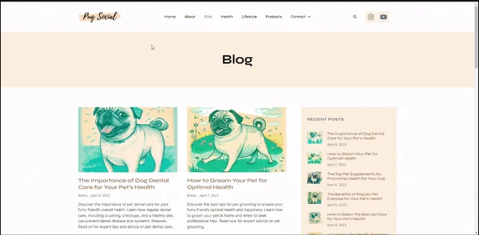

Developing PugSocial.com, an affiliate marketing website for pug lovers, has been an incredible journey. Along the way, I discovered the transformative power of AI, with the assistance of Midjourney, a leading media development platform. In this blog post, I want to share my experience of using AI and Midjourney's expertise in crafting engaging content and media for PugSocial.com. From website responsiveness to SEO, this partnership has elevated my website and enhanced the user experience.
The Spark of Inspiration
Passionate about pugs, I envisioned PugSocial.com as a dedicated platform for pug enthusiasts. However, I knew that creating captivating content and visually appealing media would be crucial. This is where Midjourney, with its AI-driven solutions, played a vital role in bringing my vision to life.
AI and Media Development
A Dynamic Partnership: Midjourney, powered by AI technology, became an invaluable ally in the content creation process. By utilizing AI language models, such as OpenAI's GPT-3, Midjourney generated unique, high-quality articles, blog posts, and product descriptions that perfectly captured the essence of PugSocial.com. This allowed me to save time and focus on other essential aspects of website development.
In addition to content creation, Midjourney's expertise in media development enhanced the visual appeal of PugSocial.com. With their assistance, I was able to create captivating images, videos, and graphics that captured the hearts of pug lovers. From adorable pug photos to engaging videos showcasing the joy of owning a pug, Midjourney's contribution was instrumental in creating an immersive user experience.
Website Responsiveness and SEO
Elevated with Midjourney's Touch: Ensuring that PugSocial.com was responsive across various devices and optimized for search engines was paramount. With Midjourney's guidance, I fine-tuned the website's responsiveness, ensuring a seamless experience for users on different screen sizes and resolutions. Midjourney's expertise in web design and development played a crucial role in making PugSocial.com visually stunning and user-friendly.
Moreover, Midjourney's insights in SEO helped me optimize the website's visibility. By analyzing data, identifying relevant keywords, and implementing effective SEO strategies, we elevated PugSocial.com's search engine rankings, attracting organic traffic and expanding our reach to pug enthusiasts worldwide.
Conclusion
The Power of AI and Midjourney: Developing PugSocial.com has been an enriching experience, thanks to the powerful partnership between AI and Midjourney. By harnessing AI technology and leveraging Midjourney's media development expertise, I was able to create engaging content and visually stunning media that captivated pug lovers and brought my website to life.
As you embark on your own creative journey, consider the possibilities that AI and media development platforms like Midjourney offer. By embracing their capabilities, you can streamline operations, enhance the user experience, and optimize your website for success.
Remember, the partnership between human creativity and AI assistance is where true magic happens. So, seize the opportunity to collaborate with AI-driven platforms and unleash the full potential of your online endeavors. With the power of AI and the expertise of Midjourney, you can create something truly remarkable and make a lasting impact in your chosen niche.
